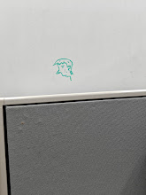
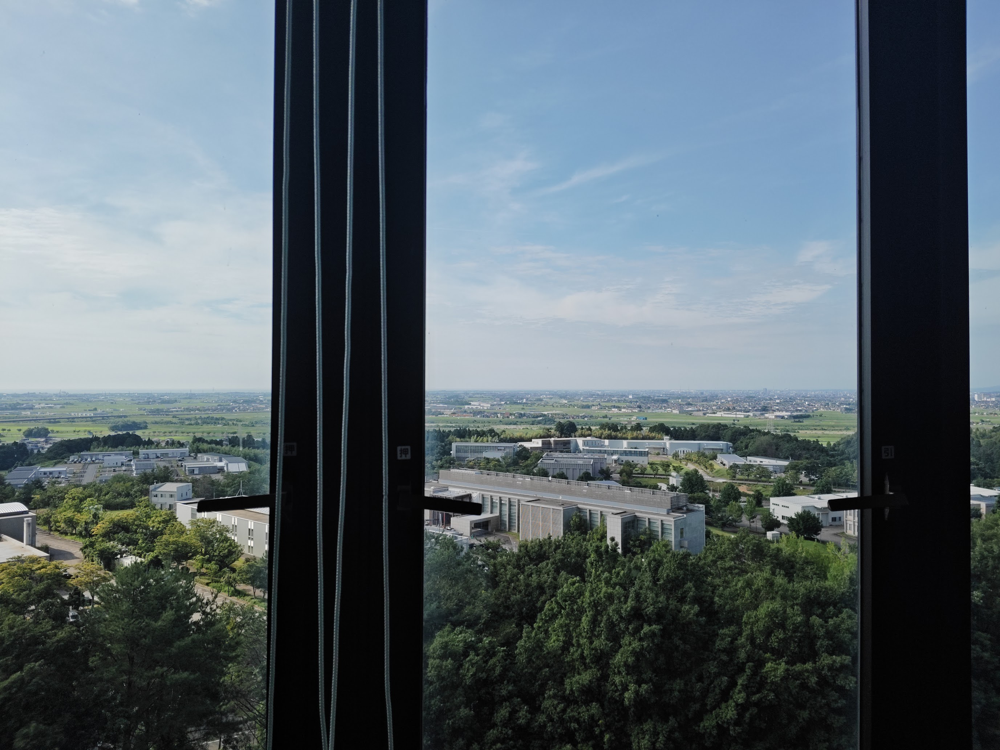
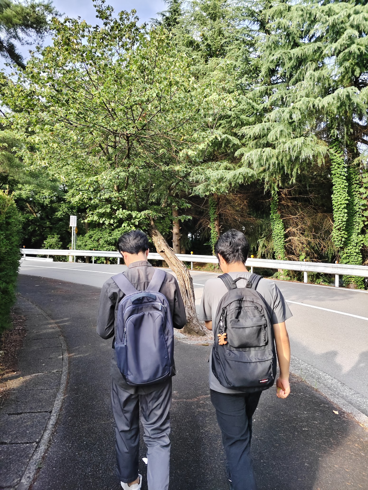
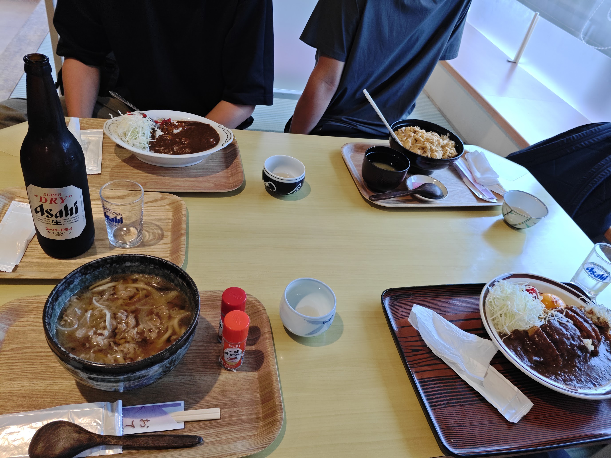

episode 7
made more friends
the frog has a new friend now.

had a presentation to the professor. the view from their conference room is breathtaking. the people i went to the convenince store at the start had intresting things going on. one was working on formally verifying the scheduler algorithm called rlsf for rust. another made a visualizer for traces of self autonomous driving vehicles.

met two new people today. visited tatsunokuchi town again. bought the bear bell at a convevenience store.


we visited a restaurant run by old people at the community center. i had beer. my friend wonders if i am an alchoholic.